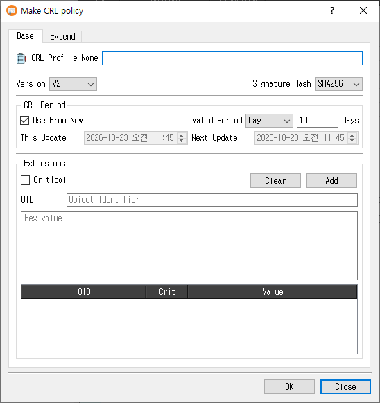

Make CRL Profile Dialog Guide
This guide explains the Make CRL policy dialog, which creates reusable Certificate Revocation List (CRL) profiles. Open it from Tools > Make CRL Profile (Shift+F7). A database connection is required. Existing profiles can also be edited, copied, or viewed from the Profile Manager.

Create a CRL profile
- On the Base tab, enter a CRL Profile Name.
- Select the CRL Version and Signature Hash.
- Set the CRL update period. Keep Use From Now selected to use a relative period, or clear it to specify explicit update dates.
- Open the Extend tab and enable the extension groups you need. Configure each extension's options and criticality.
- Click OK to save the profile. Click Close to leave without saving.
The profile name is required. On success, CertMan stores the profile and its extension settings in the connected database, refreshes the CRL Profile list, and displays CRL profile created.
Base tab
| Field or control | Purpose |
|---|---|
| CRL Profile Name | Required name for this profile. |
| Version | CRL version, either V1 or V2. The default for a new profile is V2. |
| Signature Hash | Selects the digest used for the CRL signature. New profiles default to the application's configured hash. |
| CRL Period | Controls the This Update and Next Update values. |
| Use From Now | When selected, set Valid Period to a number of days, months, or years from the current time. New profiles default to 10 days. |
| This Update / Next Update | When Use From Now is cleared, enter explicit date and time values. |
The unit dropdown offers Day, Month, and Year. The adjacent label changes to match the selected unit.
Extend tab
Each extension group is checkable. Enable the group to include that extension in CRLs created from this profile. Use its Critical checkbox to mark the extension critical where applicable.
| Extension | Controls and behavior |
|---|---|
| CRL Number | Choose Auto (Use Sequence) to use the application sequence, or clear it and enter a fixed value in hexadecimal. The automatic sequence option is selected by default. |
| Authority Key Identifier | Add issuer certificate information by selecting Certificate Issuer and/or Certificate Serial. |
| Issuing Distribution Point | Select the distribution point type (the UI currently provides URI), enter its value, then click Add. Duplicate values are rejected. Clear removes the listed values. |
| Issuer Alternative Name | Choose a value type (URI, email, or DNS), enter a value, and click Add. Duplicate values are rejected. Clear removes the listed values. |
| Extensions | Add a custom extension by entering its OID and hexadecimal Value, choosing Critical if needed, and clicking Add. An OID can be added only once. Clear removes all listed custom extensions. |
For the table-based Issuing Distribution Point, Issuer Alternative Name, and custom extension entries, you can also select a row and use its context menu to delete that row.
Edit, copy, and view
- Edit loads the saved profile and its extension settings. Saving replaces the profile's stored extension list with the current configuration.
- Copy loads an existing profile's settings and appends
_Copyto the name so it can be saved as a separate profile. - View opens the profile in read-only mode; the OK button is hidden.
Notes
- The explicit This Update value is checked to ensure it is not too early. Choose update times and intervals that match your CRL publication policy.
- Custom extension values are entered as hexadecimal data. The form requires both an OID and a value.
- Profile settings are saved to the currently connected database.
Related implementation
This guide is based on images/make_crl_profile_dlg.png, src/CertMan/make_crl_profile_dlg.ui, src/CertMan/make_crl_profile_dlg.h, src/CertMan/make_crl_profile_dlg.cpp, and the Tools > Make CRL Profile action in src/CertMan/mainwindow.cpp.